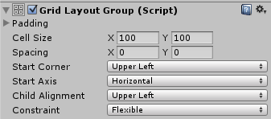

Grid Layout Group 将子级布局元素排列成网格。

属性（Properties）
| 属性 | 功能说明 |
|---|---|
| 内边距（Padding） | 布局组边缘内侧的留白。 |
| 单元格尺寸（Cell Size） | 组内每个布局元素采用的尺寸。 |
| 间距（Spacing） | 布局元素之间的间距。 |
| 起始角（Start Corner） | 第一个元素所在的起始角。 |
| 起始轴（Start Axis） | 决定优先沿哪个轴排列。Horizontal 先填满一行再开始新行；Vertical 先填满一列再开始新列。 |
| 子元素对齐（Child Alignment） | 元素未占满全部可用空间时采用的对齐方式。 |
| 约束（Constraint） | 将网格约束为固定行数或列数，帮助自动布局系统计算。 |
说明
与其他布局组不同，Grid Layout Group 忽略子元素的 Minimum、Preferred 和 Flexible 尺寸，统一使用自身 Cell Size 指定的固定尺寸。
Grid Layout Group 与 Auto Layout
将 Grid Layout Group 用于自动布局，尤其与 Content Size Fitter 搭配时，需要注意一些特殊情况。
自动布局系统分别计算水平与垂直尺寸，但网格的行数依赖列数，列数也依赖行数，两者可能发生冲突。
同一数量的单元格，可以采用不同的行列组合来适配内容。可通过 Constraint 指定固定列数或行数，帮助布局系统计算。
以下是与 Content Size Fitter 搭配的推荐配置：
弹性宽度、固定高度
若希望增加元素时网格向水平方向扩展，可设置：
- Grid Layout Group 的 Constraint 设为 Fixed Row Count（固定行数）。
- Content Size Fitter 的 Horizontal Fit 设为 Preferred Size（首选尺寸）。
- Content Size Fitter 的 Vertical Fit 设为 Preferred Size 或 Unconstrained（不约束）。
如果 Vertical Fit 使用 Unconstrained，需要自行保证网格高度足以容纳指定行数。
固定宽度、弹性高度
若希望增加元素时网格向垂直方向扩展，可设置：
- Grid Layout Group 的 Constraint 设为 Fixed Column Count（固定列数）。
- Content Size Fitter 的 Horizontal Fit 设为 Preferred Size 或 Unconstrained（不约束）。
- Content Size Fitter 的 Vertical Fit 设为 Preferred Size（首选尺寸）。
如果 Horizontal Fit 使用 Unconstrained，需要自行保证网格宽度足以容纳指定列数。
宽度和高度均为弹性
可以让宽度和高度都自适应，但无法控制具体行数或列数。网格会尽量使行数与列数接近。可设置：
- Grid Layout Group 的 Constraint 设为 Flexible（弹性）。
- Content Size Fitter 的 Horizontal Fit 设为 Preferred Size（首选尺寸）。
- Content Size Fitter 的 Vertical Fit 设为 Preferred Size（首选尺寸）。